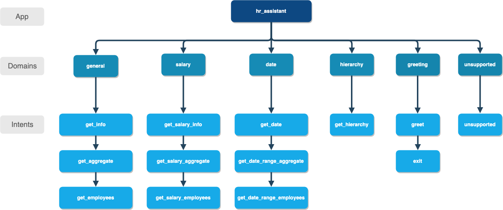

HR Assistant¶
In this step-by-step walkthrough, you’ll build a conversational application for a Human Resources assistant that can answer questions about employees and general policies at a company.
Working through this blueprint will teach you how to
- handle a large number of domains and intents
- use system entities such as amount-of-money, dates, and times
- query the knowledge base on multiple parameters
- perform question answering on unstructured data
Note
Please make sure to install and run all of the pre-requisites for MindMeld before continuing on with this blueprint tutorial.
1. The Use Case¶
This HR assistant would be used by an HR manager to ask questions about employees at an organization. They should be able to ask for information about a particular employee, for company-wide statistics, or for a group of employees that meet certain criteria. In addition, they can also use the assistant to answer frequently asked questions about payroll, performance review and general policies.
2. Example Dialogue Interactions¶
The conversational flows for an HR assistant will primarily involve follow-up questions to natural language queries. Once the intent of the user is identified, multiple interactions may be necessary to get all of the information needed to complete the request.
Here are some examples of scripted dialogue interactions for conversational flows.

3. Domain-Intent-Entity Hierarchy¶
Here is the NLP model hierarchy for our HR assistant application.
The HR assistant blueprint is organized into six domains: General, Salary, Dates, Hierarchy, Unsupported, and Greeting. The domains of the HR assistant blueprint correspond to the categories of questions that could be asked.
The full list of intents for all domains is illustrated below.
The General domain supports the following intents:
get_info— User wants specific information about an employee (e.g. state, department, position, etc)get_aggregate— User wants an average, total, or percentage of employees that meet certain criteriaget_employees— User wants a list of employees who meet certain criteria
The Salary domain supports the following intents:
get_salary— User wants the salary of a specific employeeget_salary_aggregate— User wants an average, total, or percentage specifically related to salaryget_salary_employees— User wants a list of employees who meet certain criteria that include salary
The Date domain supports the following intents:
get_date— User wants the birth date, hiring date, or firing date of an employeeget_date_range_aggregate— User wants an average, total, or percentage filtered on a date rangeget_date_range_employees— User wants a list of employees who meet certain criteria filtered on a date range
The Hierarchy domain supports the following intents:
get_hierarchy— User wants to know who an employee works for or who works for an employee
The Unsupported domain supports the following intents:
unsupported— User has provided a query outside the scope of the HR assistant
The Greeting domain supports the following intents:
greet— Greet the user and inform them of the assistant’s functionalityexit— Say bye to the user
The FAQ domain supports the following intents:
all_topics- User asks a specific policy questiongeneric- User indicates they want to ask a policy question
There are two types of entities in MindMeld: System Entities and Custom Entities. System entities are pre-defined in MindMeld. Examples include sys_temperature, sys_time, and sys_interval. Custom entities are defined by the developers of each application. Within each entity folder, the file gazetteer.txt contains the full list of values for each custom entity.
HR assistant defines and uses the following custom entities for each of its domains, which are grouped by their purpose below:
- User Information
state: detects the state referred to, for example: “is {mia|name} from {CA|state}?”age: detects whether the user is asking about the age of an employee. For example: “tell me the {age of|age} {mia|name}”sex: detects the gender of an employee. For example: “is {Ivan|name} {male|sex}?”maritaldesc: detects the marital status of an employee. For example: “is {Ivan|name} a {married|maritaldesc} man?”citizendesc: detects the citizenship status of an employee. For example: “is {Nan|name} a {us citizen|citizendesc}?”racedesc: detects the race of an employee. For example: “is {Mia|name} {multiracial|racedesc}?”reason_for_termination: detects a reason for termination for an employee. For example: “Did {Mia|name} leave because of {medical issues|reason_for_termination}?”department: detects the department of an employee. For example: “is {Nan|name} working in {sales|department}?”position: detects the position of an employee. For example: “Is {Ivan|name} a {software engineer|position}?”manager: detects whether the user is asking for hierarchy information. For example: “Who is the {supervisor|manager} for {Mia|name}?”employee_source: detects how an employee heard about the company. For example: “Did {mia|name} find out about us from an {information session|racedesc}?”performance_score: detects the performance score of an employee. For example: “Is {ivan|name} currently {performing poorly|reason_for_termination} at the company?”money: detects whether the user is referring to salary information. For example: “What is {ivan|name} {earning|money}”dob: detects whether the user is referring to date of birth. For example: “When was {Nan|name} {born|dob}?”employment_action: detects whether the user is referring to hiring or firing an employee. For example: “What was {ivan|name}’s {date of termination|employment_action}”
- Compare/Functions
comparator: detects comparison keywords (more than, less than, equal to, between). For example: “is {mia|name} {earning|money} {more than} {ivan|name}?”extreme: detects extreme keywords (highest, oldest, lowest, youngest). For example: “who is the {oldest|extreme} employee?”date_compare: detects date comparision key words (prior to, after). For example: “Was {Ivan|name} {born|dob} {prior to|date_compare} {1990|sys_time}?”function: detects a function type (percent, sum, average, count). For example: “What {percent|function} of employees are {women|sex}?”
- Custom Time Entities
time_interval: detects a decade (1980’s, 80s, eighties). For example: “{how many|function} employees were {born|dob} in the {eighties|time_interval}?”time_recur: detects a recurring time interval (yearly, monthly, weekly). For example: “what does {ivan|name} {make|money} {monthly|time_recur}?”
HR assistant uses three system entities: sys_time (time), sys_amount-of-money (money), sys_number (number). Some examples for annotation with system entities: “{How many|function} employees were {born|dob} in {2009|sys_time}?” and “what {fraction|function} of employees {make|money} {less than|comparator} {69 grand|sys_amount-of-money}?”.
Exercise
To train the different machine learning models in the NLP pipeline for this app, we need labeled training data that covers all our intents and entities. To download the data and code required to run this blueprint, run the command below in a directory of your choice. (If you have already completed the Quick Start for this blueprint, you should skip this step.)
python -c "import mindmeld as mm; mm.blueprint('hr_assistant');"
This should create a MindMeld project folder called hr_assistant in your current directory with the following structure:

4. Dialogue States¶
Dialogue state logic can be arbitrarily complex. Simple dialogue state handlers just return a canned text response, while sophisticated ones can call third party APIs, calculate state transitions, and return complex responses.
Let’s begin by looking at some of the dialogue states for the intents in the general domain:
@app.handle(intent='get_info', has_entity='age')
def get_info_age(request, responder):
...
@app.handle(intent='get_info', has_entity='state')
def get_info_state(request, responder):
...
@app.handle(intent='get_info', has_entity='position')
def get_info_position(request, responder):
...
@app.handle(intent='get_info')
def get_info_default(request, responder):
...
Observe that the same intent has multiple dialogue states that specify a has_entity field, except for the last case which serves as the default case. In other words, Mindmeld will feed the request to the dialogue state handler if there is a match between an entity found in the user query and the entity that the dialogue state handler accepts. If none of the entities are found, Mindmeld will default to the last case that does not specify an entity. This is where the system can follow up with the user and ask for any information needed to complete the query.
We can see this paradigm followed in the domain salary as well:
@app.handle(intent='get_salary', has_entity='time_recur')
def get_salary_for_interval(request, responder):
...
@app.handle(intent='get_salary')
def get_salary(request, responder):
...
Exercise
Analyze the way the HR assistant blueprint uses this pattern multiple dialogue states for multiple intents. Why this pattern used instead of another?
Sometimes a dialogue state handler needs to be aware of the context from a previous state. This happens in the follow-up request pattern. Consider this conversational interaction:
User: Can you tell me about daniel?
App: What would you like to know about Daniel Davis? # get_info_default
User: is he married
App: Daniel Davis is Single # get_info_maritaldesc
Observe that the first request leaves out some required information — the type of user information to query. Therefore, in the response, the application must ask the user for the missing information. Most importantly, the app needs to “remember” context from the first request (in this case the person that the user is referring to) to understand the user’s second request, in which the user specifies the information that was missing.
Here is how the HR assistant blueprint implements this pattern:
- Define the
get_infointent - Define the
get_infostate (default that does not include ahas_entity)
Here are the intents and states in the HR assistant blueprint, as defined in the application dialogue handler modules in the blueprint folder.
| Intent | Dialogue State Name | Dialogue State Function |
|---|---|---|
get_info |
get_info_age |
Get the age of an employee |
get_info |
get_info_state |
Get the state of an employee |
get_info |
get_info_maritaldesc |
Get the marital status of an employee |
get_info |
get_info_citizendesc |
Get the citizenship status of an employee |
get_info |
get_info_racedesc |
Get the race of an employee |
get_info |
get_info_performance_score |
Get the performance score of an employee |
get_info |
get_info_rft |
Get the reason for termination of an employee |
get_info |
get_info_employee_source |
Get how an employee heard of the company |
get_info |
get_info_position |
Get the position of an employee |
get_info |
get_info_employment_status |
Get the employment status of an employee |
get_info |
get_info_dept |
Get the department that an employee is in |
get_info |
get_info_default |
Clarify the type of info requested of an employee |
get_aggregate |
get_aggregate |
Get aggregate information requested |
get_employees |
get_employees |
Get employees that meet a certain criteria |
get_salary |
get_salary |
Get the salary of an employee |
get_salary_aggregate |
get_salary_aggregate |
Get aggregate salary related information |
get_salary_employees |
get_salary_employees |
Get employees that meet a salary criteria |
get_date |
get_date |
Get employees within a date range |
get_date_range_aggregate |
get_date_range_aggregate |
Aggregate info of employees within a date range |
get_date_range_employees |
get_date_range_employees |
Get employees within a date range |
get_hierarchy |
get_hierarchy |
Get manager information of an employee |
unsupported |
unsupported |
Handle unsupported query by prompting user |
greet |
greet |
Greet the user and describe functionality |
exit |
exit |
Say bye to the user |
generic |
generic |
Prompt the user for a specific policy question |
all_topics |
all_topics |
Reply with the answer to the asked policy question |
5. Knowledge Base¶
The knowledge base for our HR assistant app leverages a publicly available synthetic dataset from Kaggle and frequently asked human resources questions from UC Berkeley <https://hr.berkeley.edu/faq-page>. The knowledge base comprises of two indices in Elasticsearch:
user_data— information about employeesfaq_data- frequently asked question answer pairs
For example, here’s the knowledge base entry in the user_data index for the employee “Mia Brown”:
{
"emp_name": "Brown, Mia",
"id": 1103024456,
"state": "MA",
"dob": "1985-11-24",
"age": 32,
"sex": "Female",
"maritaldesc": "Married",
"citizendesc": "US Citizen",
"racedesc": "Black or African American",
"doh": "2008-10-27",
"dot": "1800-01-01",
"rft": "N/A - still employed",
"employment_status": "Active",
"department": "Admin Offices",
"position": "Accountant I",
"money": 28.5,
"manager": "Brandon R. LeBlanc",
"employee_source": "Diversity Job Fair",
"performance_score": "Fully Meets",
"first_name": "Mia",
"last_name": "Brown"
}
Here’s another example with a knowledge base entry in the faq_data index:
{
"id": "hrfaq24",
"question": "What is the performance cycle?",
"answer": "The intent of the performance cycle is to identify the key parts of each employee's job, identify what it looks like when that is done well (meets your expectations as a manager), and how both you as manager and your employee will know when that is achieved (measurements).Phase 1 - Planning: Creating goals and expectations between the employee and manager for the current year. Phase 2 - Check-Ins: Giving ongoing feedback throughout the year; identifying acomplishments, areas for improvement and adjusting the goals/expectations as necessary. Phase 3 - Review: Reviewing the year at the end of the performance period."
}
Assuming that you have Elasticsearch installed, running the blueprint() command described above should build the knowledge base for the HR assistant app by creating the index and importing all the necessary data. To verify that the knowledge base has been set up correctly, use the Question Answerer to query the indexes.
from mindmeld.components.question_answerer import QuestionAnswerer
qa = QuestionAnswerer(app_path='hr_assistant')
qa.get(index='user_data')[0]
{
'rft': 'N/A - still employed',
'performance_score': 'N/A- too early to review',
'citizendesc': 'US Citizen',
'manager': 'Brandon R. LeBlanc',
'sex': 'Female',
'maritaldesc': 'Single',
'emp_name': 'Singh, Nan ',
'dot': '1800-01-01',
'last_name': 'Singh',
'racedesc': 'White',
'money': 16.56,
'dob': '1988-05-19',
'employee_source': 'Website Banner Ads',
'id': 1307059817,
'state': 'MA',
'employment_status': 'Active',
'position': 'Administrative Assistant',
'doh': '2015-05-01',
'department': 'Admin Offices',
'first_name': 'Nan',
'age': 29
}
Exercise
The blueprint comes with a pre-configured, pre-populated knowledge base to help you get up and running quickly. Read the User Guide section on Question Answerer to learn how to create knowledge base indices from scratch. Then, try creating one or more knowledge base indices for your own data.
6. Training Data¶
The labeled data for training our NLP pipeline was created using a combination of in-house data generation and crowdsourcing techniques. This is a highly important multi-step process that is described in more detail in Step 6 of the Step-By-Step Guide. Be aware that at minimum, the following data generation tasks are required:
Purpose
|
Question (for crowdsourced data generators)
or instruction (for annotators)
|
|---|---|
Exploratory data generation
for guiding the app design
|
“What kinds of questions would you ask a smart HR assistant
that has access to an HR database?”
|
Generate queries for training
Domain and Intent Classifiers
|
get_info intent (general domain):“How would you ask for an employee’s information such as state,
position, department, etc?”
get_salary intent (salary domain):“How would you ask for the salary
of an employee?”
|
Annotate queries
for training the Entity Recognizer
|
get_info: “Annotate all occurrences ofname and other user info entities in the given query” |
Annotate queries
for training the Role Classifier
|
HR Assistant does not use roles. For examples please visit
the home assistant blueprint.
|
Generation synonyms for gazetteer generation
to improve entity recognition accuracies
|
state entity: “Enumerate a list of state names”department entity: “What are some names ofdepartments at the company?”
|
In summary, the process is this:
- Start with an exploratory data generation process, collecting varied examples of how the end user would interact with the app.
- Cluster the data into different domains based on category. For example, the HR Assistant application has to answer questions regarding general information, salary, date filters, and hierarchy so we divide these areas into the following domains:
general,salary,date,hierarchy,unsupportedandgreeting. - Once we establish a clear domain-intent-entity-role hierarchy, generate labeled data for each component in the hierarchy.
The domains directory contains the training data for intent classification and entity recognition. The entities directory contains the data for entity resolution. Directories are at root level in the blueprint folder.
Exercise
- Read Step 6 of the Step-By-Step Guide for best practices around training data generation and annotation for conversational apps. Following those principles, create additional labeled data for all the intents in this blueprint and use them as held-out validation data for evaluating your app. You can read more about NLP model evaluation and error analysis in the user guide.
- To train NLP models for your own HR assistant application, you can start by reusing the blueprint data for generic intents like
get_infoandget_salary. If you have more information in your HR database then you can create new intents and domains to include the new functionality.
7. Training the NLP Classifiers¶
Train a baseline NLP system for the blueprint app. The build() method of the NaturalLanguageProcessor class, used as shown below, applies MindMeld’s default machine learning settings.
from mindmeld import configure_logs; configure_logs()
from mindmeld.components.nlp import NaturalLanguageProcessor
nlp = NaturalLanguageProcessor(app_path='./hr_assistant')
nlp.build()
Fitting domain classifier
Loading raw queries from file hr_assistant/domains/date/get_date/train.txt
Loading raw queries from file hr_assistant/domains/date/get_date_range_aggregate/train.txt
Loading raw queries from file hr_assistant/domains/date/get_date_range_employees/train.txt
Loading raw queries from file hr_assistant/domains/faq/all_topics/train.txt
.
.
.
Fitting intent classifier: domain='greeting'
Selecting hyperparameters using k-fold cross-validation with 5 splits
Best accuracy: 98.86%, params: {'C': 1, 'class_weight': {0: 1.5041516245487365, 1: 0.8843956953642383}, 'fit_intercept': False}
Fitting entity recognizer: domain='greeting', intent='greet'
No entity model configuration set. Using default.
There are no labels in this label set, so we don't fit the model.
.
.
.
Tip
During active development, it helps to increase the MindMeld logging level to better understand what is happening behind the scenes. All code snippets here assume that logging level is set to verbose.
To see how the trained NLP pipeline performs on a test query, use the process() method.
nlp.process("is Mia brown in the sales department?")
{'text': 'is Mia brown in the sales department?',
'domain': 'general',
'intent': 'get_info',
'entities': [{'text': 'Mia brown',
'type': 'name',
'role': None,
'value': [{'cname': 'Mia Brown',
'score': 120.39465,
'top_synonym': 'Mia Brown'},
{'cname': 'Thelma Petrowsky',
'score': 11.883775,
'top_synonym': 'Petrowsky'},
{'cname': 'Brooke Oliver', 'score': 11.557489, 'top_synonym': 'Brooke'},
{'cname': 'Jeremiah Semizoglou',
'score': 10.367119,
'top_synonym': 'Jeremiah'}],
'span': {'start': 3, 'end': 11}},
{'text': 'sales',
'type': 'department',
'role': None,
'value': [{'cname': 'sales', 'score': 33.45853, 'top_synonym': 'sales'}],
'span': {'start': 20, 'end': 24}}]
}
Inspect classifiers in baseline configuration¶
For the data distributed with this blueprint, the baseline performance is already high. However, when extending the blueprint with your own custom hr assistant data, you may find that the default settings may not be optimal and you can get better accuracy by individually optimizing each of the NLP components.
Because the HR assistant app has five domains and over twenty intents, the classifiers need a fair amount of fine-tuning.
Start by inspecting the baseline configurations that the different classifiers use. The User Guide lists and describes the available configuration options. As an example, the code below shows how to access the model and feature extraction settings for the intent classifier.
ic = nlp.domains['salary'].intent_classifier
ic.config.model_settings['classifier_type']
'logreg'
ic.config.features
{'bag-of-words': {'lengths': [1, 2]},
'edge-ngrams': {'lengths': [1, 2]},
'exact': {'scaling': 10},
'freq': {'bins': 5},
'gaz-freq': {},
'in-gaz': {}
}
You can experiment with different learning algorithms (model types), features, hyperparameters, and cross-validation settings, by passing the appropriate parameters to the classifier’s fit() method. Intent classifer and role classifier examples follow.
Experiment with the intent classifiers¶
We can change the feature extraction settings to use bag of trigrams in addition to the default bag of words:
ic.config.features['bag-of-words']['lengths'].append(3)
ic.fit()
Fitting intent classifier: domain='salary'
Selecting hyperparameters using k-fold cross-validation with 5 splits
Best accuracy: 97.20%, params: {'C': 100, 'class_weight': {0: 0.9612578616352201, 1: 1.0065860215053766, 2: 1.0362745098039214}, 'fit_intercept': True}
We can also change the model for the intent classifier to Support Vector Machine (SVM) classifier, which works well for some datasets:
search_grid = {
'C': [0.1, 0.5, 1, 5, 10, 50, 100, 1000, 5000],
'kernel': ['linear', 'rbf', 'poly']
}
param_selection_settings = {
'grid': search_grid,
'type': 'k-fold',
'k': 10
}
ic = nlp.domains['salary'].intent_classifier
ic.fit(model_settings={'classifier_type': 'svm'}, param_selection=param_selection_settings)
Fitting intent classifier: domain='salary'
Selecting hyperparameters using k-fold cross-validation with 10 splits
Best accuracy: 98.00%, params: {'C': 0.5, 'kernel': 'linear'}
Similar options are available for inspecting and experimenting with the Entity Recognizer and other NLP classifiers as well. Finding the optimal machine learning settings is an iterative process involving several rounds of parameter tuning, testing, and error analysis. Refer to the NaturalLanguageProcessor in the user guide for more about training, tuning, and evaluating the various MindMeld classifiers.
Inspect the role classifiers¶
The HR assistant does not make use of the role classifiers. For an example of inspecting the role classifiers please visit the home assistant application blueprint.
Inspect the configuration¶
The application configuration file, config.py, at the top level of the home assistant folder, contains custom intent and domain classifier model configurations. These are defined as dictionaries named DOMAIN_CLASSIFIER_CONFIG and INTENT_CLASSIFIER_CONFIG, respectively; other dictionaries include ENTITY_RECOGNIZER_CONFIG and ROLE_CLASSIFIER_CONFIG. If no custom model configuration is added to config.py file, MindMeld uses its default classifier configurations for training and evaluation. Here is an example of an intent configuration:
INTENT_CLASSIFIER_CONFIG = {
'model_type': 'text',
'model_settings': {
'classifier_type': 'logreg'
},
'param_selection': {
'type': 'k-fold',
'k': 5,
'grid': {
'fit_intercept': [True, False],
'C': [0.01, 1, 10, 100],
'class_bias': [0.7, 0.3, 0]
}
},
'features': {
"bag-of-words": {
"lengths": [1, 2]
},
"edge-ngrams": {"lengths": [1, 2]},
"in-gaz": {},
"exact": {"scaling": 10},
"gaz-freq": {},
"freq": {"bins": 5}
}
}
Exercise
Experiment with different models, features, and hyperparameter selection settings to see how they affect the classifier performance. Maintain a held-out validation set to evaluate your trained NLP models and analyze the misclassified test instances. Then use observations from the error analysis to inform your machine learning experimentation. For more on this topic, refer to the User Guide.
8. Parser Configuration¶
The relationships between entities in the HR assistant queries are simple ones. For example, in the annotated query is {mia|name} {married|maritaldesc}?, the maritaldesc entity is self-sufficient, in that it is not described by any other entity.
If you extended the app to support queries with more complex entity relationships, it would be necessary to specify entity groups and configure the parser accordingly. For more about entity groups and parser configurations, see the Language Parser chapter of the User Guide.
Since we do not have entity groups in the HR assistant app, we do not need a parser configuration.
9. Using the Question Answerer¶
The Question Answerer component in MindMeld is mainly used within dialogue state handlers for retrieving information from the knowledge base. In the case of an HR assistant that intelligently retrieves information from a knowledge base of employee information or policy questions, a question answerer is essential. Other than the unsupported intent, all of the intents in the HR Assistant make use of the Question Answerer.
from mindmeld.components import QuestionAnswerer
qa = QuestionAnswerer(app_path='hr_assistant')
users = qa.get(index='user_data')[0:3]
[user['emp_name'] for user in users]
[
"Singh, Nan",
"Simard, Kramer",
"Clayton, Rick"
]
MindMeld would supports filtering the results (For example, we can search for employees that are male, in the sales department, etc.) See the User Guide for an explanation of the retrieval and ranking mechanisms that the Question Answerer offers.
In the case that we are trying to filter on multiple non-numeric entities, we can do so by passing in a dictionary that contains a key and value pair. An example of this is shown in the helper function for the HR Assistant below.
def _resolve_categorical_entities(request, responder):
"""
This function retrieves all categorical entities as listed below and filters the knowledge base
using these entities as filters. The final search object containing the shortlisted employee data
is returned back to the calling function.
"""
# Finding all categorical entities
categorical_entities = [e for e in request.entities if e['type'] in ('state', 'sex', 'maritaldesc','citizendesc',
'racedesc','performance_score','employment_status','employee_source','position','department')]
# Building custom search
qa = app.question_answerer.build_search(index='user_data')
# Querying the knowledge base for all categorical filters
if categorical_entities:
try:
for categorical_entity in categorical_entities:
key = categorical_entity['type']
val = categorical_entity['value'][0]['cname']
kw = {key : val}
qa = qa.filter(**kw) # Search is being filtered multiple times
except:
pass
size = 300
return qa, size
For the faq domain, given the user query, the Question Answerer has to retrieve information from a knowledge base that consists of long-form text in the form of question-answer pairs. See User Guide to learn more about how MindMeld retrieves and ranks unstructured data.
In the HR blueprint, we use both question and answer field to rank the KB entries. Depending on the domain and coverage of data, you may want to experiment with ranking on multiple fields.
from mindmeld.components import QuestionAnswerer
qa = QuestionAnswerer(app_path='hr_assistant')
qa.get(index='faq_data', query_type='text', question='how are overtime hours determined?')[0]
{
'question': 'How is my overtime compensation calculated?',
'answer': 'Overtime is paid at the rate of one and one-half times an employee’s regular rate of pay for all hours worked in excess of forty (40) hours in a standard work week. “Hours worked” refers to the amount of time actually worked in a standard work week. Paid time off for sick leave, vacation, or holidays is not included in hours worked for the determination of overtime. Overtime hours and compensation is based on calculation using the above rate.',
'id': 'hrfaq9'
}
from mindmeld.components import QuestionAnswerer
qa = QuestionAnswerer(app_path='hr_assistant')
query = 'is there an online course on how to set goals?'
qa.get(index='faq_data', query_type='text', question=query)[0]
qa.get(index='faq_data', query_type='text', question=query, answer=query)[0]
{
'question': 'How do I set goals?',
'answer': 'Meet with your employee. Identify and agree on major pieces of the job. Use that list to determine performance for the year. Start the next period by identifying the major pieces of the job, what success looks like, and how that might be measured.',
'id': 'hrfaq29'
}
{
'question': 'Will there be training on goal setting for Managers and Supervisors?',
'answer': 'Yes! Our classes provide detailed support on how to set goals. This program is offered twice a year based on the timing of the performance cycle. There is a online course (sign-up on blu) titled "Setting Expectations and Individual Performance Goals." Additionally, Staff Learning and Development offers training for work teams upon request.',
'id': 'hrfaq30'
}
Exercise
- Think of other important data that would be useful to have in the knowledge base for an HR Assistant use case. Identify the ways that data could be leveraged to provide a more intelligent user experience.
- When customizing the blueprint for your own app, consider adding additional employee information in the knowledge base.
10. Testing and Deployment¶
Once all the individual pieces (NLP, Dialogue State Handlers) have been trained, configured or implemented, perform an end-to-end test of the app using the Conversation class.
from mindmeld.components.dialogue import Conversation
conv = Conversation(nlp=nlp, app_path='./hr_assistant')
conv.say("What is Elisa's marital status")
['Elisa Bramante is Single']
The say() method:
- packages the input text in a user request object
- passes the object to the MindMeld Application Manager to a simulate an external user interaction with the app, and
- outputs the textual part of the response sent by the dialogue manager.
In the above example, we requested information about a particular employee and the app responded, as expected, by identifying the employee referenced by just the first name and the type of information requested about the employee.
Try a multi-turn dialogue:
>>> conv = Conversation(nlp=nlp, app_path='hr_assistant')
>>> conv.say('Tell me about Mia Brown')
['What information would you like to know about Mia Brown?', 'Listening...']
>>> conv.say("Who is her manager?")
["Brandon R. LeBlanc is Mia Brown's manager"]
If the user goes off track, or presents a query that is out of the scope of the assistant, the app is able to recognize this and prompt the user back to what is supported. Below is an example:
>>> conv.say("Can you give me a million dollars please?")
["Hmmm, I don't quite understand, you can ask me something like 'What is the average salary for women?'",
'Listening...']
>>> conv.say("What is nan singh's hourly salary?")
["Nan Singh's hourly salary is 16.56"]
Alternatively, enter conversation mode directly from the command-line.
python -m hr_assistant converse
You: Percent of employees earning less than 20 an hour?
App: Of the total employees, the percentage that meet your criteria is 29.0
Exercise
Test the app and play around with different language patterns to discover edge cases that our classifiers are unable to handle. The more language patterns we can collect in our training data, the better our classifiers can handle in live usage with real users. Good luck and have fun - now you have your very own Jarvis!
WhatsApp integration
Follow our tutorial on WhatsApp integration for more information on how to integrate with WhatsApp.